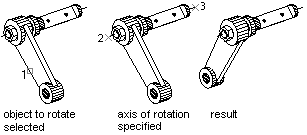

Autodesk AutoCAD 2021: ActiveX Developer's Guide > Work in Three-Dimensional Space > About Editing in 3D (VBA/ActiveX) >
With the Rotate method, you can rotate objects in 2D about a specified point.
The direction of rotation is determined by the WCS. The Rotate3D method rotates objects in 3D about a specified axis. The Rotate3D method takes three values as input: the WCS coordinates of the two points defining the rotation axis and the rotation angle in radians.

To rotate 3D objects, use either the Rotate or Rotate3D method.
This example creates a 3D box. It then defines the axis for rotation and finally rotates the box 30 degrees about the axis.
Sub Ch8_Rotate_3DBox()
Dim boxObj As Acad3DSolid
Dim length As Double
Dim width As Double
Dim height As Double
Dim center(0 To 2) As Double
' Define the box
center(0) = 5: center(1) = 5: center(2) = 0
length = 5
width = 7
height = 10
' Create the box object in model space
Set boxObj = ThisDrawing.ModelSpace. _
AddBox(center, length, width, height)
' Define the rotation axis with two points
Dim rotatePt1(0 To 2) As Double
Dim rotatePt2(0 To 2) As Double
Dim rotateAngle As Double
rotatePt1(0) = -3: rotatePt1(1) = 4: rotatePt1(2) = 0
rotatePt2(0) = -3: rotatePt2(1) = -4: rotatePt2(2) = 0
rotateAngle = 30
rotateAngle = rotateAngle * 3.141592 / 180#
' Rotate the box
boxObj.Rotate3D rotatePt1, rotatePt2, rotateAngle
ZoomAll
End Sub